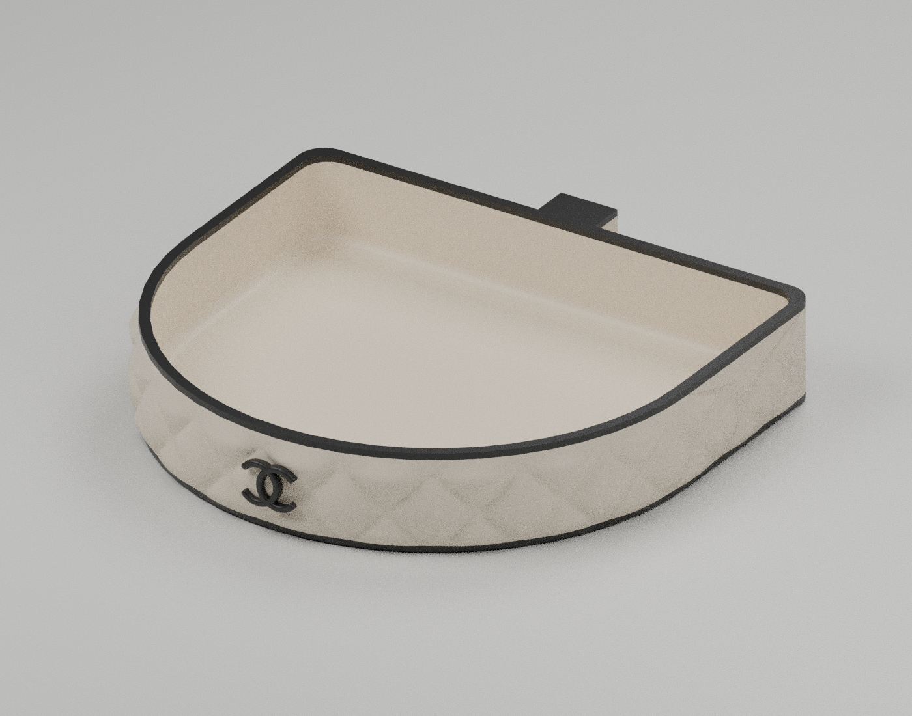

Chanel 绗缝狗碗
30 mm 高，绗缝表面与独立 CC Logo，双色分层主体与倒 T 接口。切片、实配与承重尚未验证。
当前模型 3 个 · 展开下载
当前模型 · STEP
总装STEP含4实体（含CC），另有平放CC和卡扣小样。不要将总装中的CC与独立CC重复打印。自行分配耗材及切片。
- Models/Chanel_CC_print_flat.stepSTEP 1 KB
- Models/Chanel_assembly.stepSTEP 1 KB
- Models/Chanel_clip_fit_test.stepSTEP 1 KB
设计文档与历史资料（100）
- Design/chanel_front--741fde7bf7.png1.4 MB
- Design/chanel_front--837be9bbbf.png1.5 MB
- Design/chanel_front--df1e91aa79.png1.5 MB
- Design/chanel_front--e775b4edd8.png1.5 MB
- Design/chanel_front--e7a00c4087.png1.4 MB
- Design/chanel_rear--1af10c931d.png1.5 MB
- Design/chanel_rear--27e0d5d4f5.png1.5 MB
- Design/chanel_rear--5e433db648.png1.5 MB
- Design/chanel_rear--7546afcb8b.png1.4 MB
- Design/chanel_top--33d8248e51.png1.4 MB
- Design/chanel_top--5ca72eedaa.png1.4 MB
- Design/chanel_top--aac6beae85.png1.4 MB
- Design/chanel_top--c12143be08.png1.4 MB
- Design/chanel_voxel_front--dbaa36a7a6.png1.4 MB
- Design/chanel_voxel_rear--04000d8223.png1.4 MB
- Design/dog_bowls_v2--e7a178e4df.png1.8 MB
- Design/dog_bowls_v3--508b895829.png1.8 MB
- Design/lv_front--2f89287605.png1.5 MB
- Design/lv_front--4e19176593.png1.5 MB
- Design/lv_front--a3a191f988.png1.5 MB
- Design/lv_rear--a1c8745593.png1.5 MB
- Design/lv_rear--ce182b6f12.png1.5 MB
- Design/lv_rear--d0218ca07e.png1.5 MB
- Design/lv_top--6cd51c8530.png1.4 MB
- Design/lv_top--c675974699.png1.4 MB
- Design/lv_top--d6b952cd72.png1.4 MB
- Design/lv_voxel_front--d9458f8ae1.png1.4 MB
- Design/lv_voxel_rear--829206949c.png1.4 MB
- Design/perspective--f5f22602bb.png2.5 MB
- Design/rear--2ff4619fec.png2.2 MB
- Design/rear--4b6af4f10c.png2.5 MB
- Notes/README--22bd111e91.txt1 KB
- Notes/README--2f6f51d2c9.md1 KB
- Notes/cap-audit--8911e3d895.log1 KB
- Notes/chanel-build--3dc44d289f.log17 KB
- Notes/chanel-build--7ab605406f.log18 KB
- Notes/chanel-build--8c6ae1773d.log18 KB
- Notes/chanel-build--db3613b80d.log6 KB
- Notes/chanel-build--f5f548c1b3.log19 KB
- Notes/chanel-fuse--be7e987a21.log1 KB
- Notes/chanel-voxel--944ced1f08.log1 KB
- Notes/chanel-voxel-render--2522dfff23.log11 KB
- Notes/cli--26aa22c018.log1 KB
- Notes/cli--c6bc00ddf5.log1 KB
- Notes/cli2--e330e2d117.log1 KB
- Notes/cli3--f63421115c.log1 KB
- Notes/cli4--f6a5f74936.log1 KB
- Notes/current-model.txt1 KB
- Notes/current-validation.json3 KB
- Notes/filament--7c686cb805.json36 KB
- Notes/filament2--7184fcec72.json36 KB
- Notes/filament3--2e95d406eb.json36 KB
- Notes/lv-build--09e729af20.log19 KB
- Notes/lv-build--2f06aa3bc0.log22 KB
- Notes/lv-build--f9bca28223.log23 KB
- Notes/lv-fuse--6f33a32d37.log1 KB
- Notes/lv-voxel--9ed2f09462.log1 KB
- Notes/lv-voxel-render--5837644fb5.log11 KB
- Notes/machine--64dec1e251.json36 KB
- Notes/machine2--b2f9774a30.json36 KB
- Notes/manifest--5d421d42fc.json1 KB
- Notes/manifest--df86827676.json1 KB
- Notes/package_BUILD--8635a966e0.txt1 KB
- Notes/package_README_打印说明--39df3df46a.txt3 KB
- Notes/package_interface_validation--80ceeb3a87.json1 KB
- Notes/parameters--2c554d66bc.json1 KB
- Notes/parameters--dd962b98b5.json1 KB
- Notes/preset--ab517da88d.json40 KB
- Notes/process--1be117faea.json36 KB
- Notes/process2--1ca6a99374.json36 KB
- Notes/process3--0fafc8ef50.json36 KB
- Notes/result--4898a01a96.json1 KB
- Notes/scene-audit--36ebf724c7.log1 KB
- Notes/validation--8b3cc53f97.json2 KB
- Notes/weld-audit--811abedc7b.log1 KB
- README.md1 KB
- Source/audit_caps--9863a58a8a.py1 KB
- Source/audit_scene--49177e8379.py1 KB
- Source/audit_weld--724984caba.py1 KB
- Source/build--085d8d9a98.py9 KB
- Source/build--0d6c559dd5.py8 KB
- Source/build--2bd779ae39.py7 KB
- Source/build--3ac35b6e43.py9 KB
- Source/build--9aa0dc537e.py9 KB
- Source/build--9bd6144192.py5 KB
- Source/build--a0640a5939.py10 KB
- Source/build--e4874419cd.py10 KB
- Source/build--f569013dce.py5 KB
- Source/finalize_meshes--9b296bc742.py1 KB
- Source/fuse--471015fcca.py1 KB
- Source/fuse--488a790983.py2 KB
- Source/fuse--b6323ea860.py2 KB
- Source/fuse--c040b01c65.py1 KB
- Source/inspect_voxel--658e7809b5.py1 KB
- Source/prepare--a16593c89f.py4 KB
- Source/render--15d654bd82.py2 KB
- Source/render--f9d950b8f2.py2 KB
- Source/surface_helpers--a588657e19.py1 KB
- Source/validate--4c948f3388.py1 KB
- Source/voxel_fuse--4f229288e3.py1 KB